Six AI resume skills, compared. Which one won't embarrass you in an interview?
Six free skills that tailor your resume to a job, including the one I made. What each does well, where each falls short, and how to pick in 30 seconds.
Disclosure: I made Resume Tribunal. I've tried to be fair, and I say where it loses. Everything here comes from reading each skill's own files on 11 October 2026, with star counts from GitHub that day.
Wait, what's a "skill"?
If AI to you means "type a question into ChatGPT", a skill is a set of instructions your AI app loads when your request matches. Install it once, then just say "tailor my resume to this job".
You don't always need one. To reword one bullet, a normal prompt is fine. A skill helps when you apply to twenty jobs and want the same careful process every time.
The two traps every resume tool can fall into
Trap one: making things up. AI loves a round number. "Half a day" quietly becomes "4 hours". A tool that adds keywords "to match the job" can slip in a skill you've never used, and then the interviewer asks about it.

Trap two: believing ATS myths. You've seen "75% of resumes are rejected by ATS". That figure traces back to a vendor that closed in 2013. Most rejections come from people.
The six, in one line each
- ResumeSkills, 2,650 stars. Best for the whole job search: 22 skills, cover letters and interview prep included. Watch out: it adds job keywords, repeats the 75% myth, and nothing checks claims against your words.
- Resume Tailoring Skill, 770 stars. Best for lots of similar jobs, and finding experience you forgot to write down. Watch out: works best with 10 or more old resumes, and one AI writes and judges.
- resume-cover-letter, 1,060 stars. Best for cover letters and UK or Australian formats. Watch out: it pushes for numbers in 60% of bullets, which is where invention starts.
- Proficiently, 420 stars. Best for strict "never invent" rules, and it remembers your corrections. Watch out: no license file, part of a bigger commercial product, self-review only.
- Claude Code Job Tailor, 170 stars. Best for fast, polished PDFs from one data file. Watch out: Claude Code only, some setup, non-commercial license.
- Resume Tribunal, new. Best for a second opinion you can trust, in any AI app. Watch out: no cover letters, and the full council is slower but more thorough.
Who checks the AI?
| Checked by a different AI | Claims checked against your words | You approve changes | Remembers you next time | |
|---|---|---|---|---|
| ResumeSkills | No | No | Not built in | No |
| Resume Tailoring Skill | No | No | Yes | Yes |
| resume-cover-letter | No | No | Not built in | No |
| Proficiently | No | No | Yes | Yes |
| Claude Code Job Tailor | No | No | Yes | Yes |
| Resume Tribunal | Yes | Flagged by a script | Yes, each change | Yes |
Why I built mine differently
Every other skill here has one AI write and grade. AI judges go noticeably easier on their own work, so I wanted the grading done by a different AI.
- The second opinion comes from another company's AI, and it isn't told who wrote the draft.
- A script flags any number or name it can't find in what you told it, and you settle each one.
- Facts you confirm can be saved for your next job, on your computer or as a block you paste.
- A quick review takes about 2 minutes of your time. A full council, with up to three AIs from different companies, takes longer: 27 to 37 minutes in the recorded example runs.
If you can't explain a line in an interview, it shouldn't be on your resume.
Whatever you pick
- Read every line before you send it.
- Never keep a number you didn't give the AI yourself.
- Check the employer's rules on AI help.
If you've already used another skill, ask Resume Tribunal for "a second opinion on my resume" and it will check that resume too.